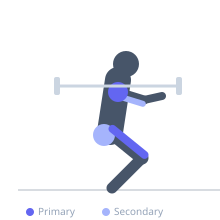
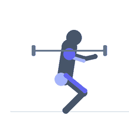

Exercise guide / Overhead Squat
Overhead Squat
The overhead squat is a full squat performed with the barbell held locked out overhead in a wide snatch grip, demanding exceptional shoulder, thoracic, and ankle mobility alongside significant core stability and quadriceps strength. It is used in Olympic weightlifting as the catch position of the snatch, and independently as a mobility assessment tool and accessory exercise. The overhead position creates a large moment arm at the shoulders and spine, making core bracing critical throughout the movement.
Primary muscles
rectus femoris
vastus lateralis
vastus medialis
deltoid anterior
Secondary muscles
gluteus maximus
triceps long head
Stabilizers
infraspinatus
supraspinatus
transverse abdominis
erector spinae
Equipment
Standard Barbell
Weight Plates
Optional
Power Rack (Squat Cage)


Starting position
- Bar held overhead in a wide snatch grip with elbows locked out. Feet shoulder-width or slightly wider, toes turned out slightly.
Setup
- Press out on the bar actively during the entire movement. Warm up shoulders, thoracic spine, and ankles thoroughly. Begin with a PVC pipe or empty bar.
Steps
- Step 1: Stand with bar overhead, locked out in a wide grip. Brace the core and press out against the bar.
- Step 2: Initiate the squat by pushing the knees out in line with the toes and sitting back and down.
- Step 3: Descend to full depth (hip crease below the knee) while maintaining bar position directly over the mid-foot.
- Step 4: Keep the torso as upright as possible — the bar should remain over the base of support throughout.
- Step 5: Drive through the full foot to stand, maintaining bar lockout throughout.
Coaching cues
- Press out on the bar — elbows locked
- Bar over mid-foot — the whole way down
- Knees out, chest up, sit between your legs
Breathing
- Breathe in and brace before the descent. Exhale as you drive through the top of the squat.
Range of motion
- Full depth squat — hip crease below the knee. Bar remains overhead and locked out throughout.
Tempo
- 3-1-1-0: 3 second descent, 1 second pause at bottom, 1 second drive up.
Common mistakes
- Bar drifting forward during the descent
- Insufficient ankle or thoracic mobility causing the torso to fold forward
- Letting the elbows bend under load
- Knees caving inward
Safety
- This is a highly demanding mobility exercise. Develop prerequisite shoulder, thoracic, and ankle mobility before loading.
- If unable to perform with an empty bar, use a PVC pipe to drill the pattern.
- Be prepared to drop the bar safely forward.
Training
- strength: 1–5 reps
- hypertrophy: 3–8 reps
- strength: 3–5 sets
- hypertrophy: 3–4 sets
- Rest: {'strength': 240, 'hypertrophy': 120}